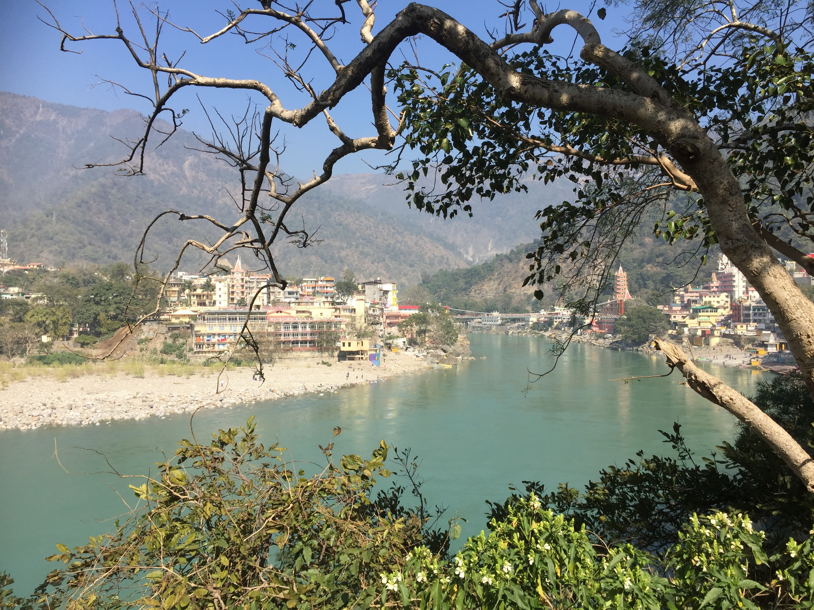

Rishikesh, also written as Hrishikesh with H silent, is a city governed by Rishikesh Municipal Corporation (since October 2017),[1] and a tehsil in Dehradun district of the Indian state Uttarakhand. Located in the foothills of the Himalayas in northern India, it is known as the "Gateway to the Garhwal Himalayas" and "Yoga Capital of the World".[2][3][4] It lies approximately 25 km (16 mi) north of the city Haridwar and 43 km (27 mi) southeast of the state capital Dehradun. According to Census of India, 2011 Rishikesh had a population of 102,138 making it the seventh most populated city in the state of Uttarakhand. It is known as the pilgrimage town and regarded as one of the holiest places to Hindus.[3] Hindu sages and saints have visited Rishikesh since ancient times to meditate in search of higher knowledge.[5] In September 2015, the Union tourism minister Mahesh Sharma announced that Rishikesh and Haridwar will be the first in India to be given the title of "twin national heritage cities".[6] Due to the religious significance of the place, non-vegetarian food and alcohol are strictly prohibited in Rishikesh.[7] The city has hosted the annual International Yoga Festival on the first week of March since 1989.[8][9]
The song black bird was come from rishikesh when the Beatles visited india. "Blackbird" is a song by the English rock band the Beatles from their 1968 double album The Beatles (also known as "the White Album"). It was written by Paul McCartney and credited to Lennon–McCartney, and performed as a solo piece by McCartney. When discussing the song, McCartney has said that the lyrics were inspired by hearing the call of a blackbird in Rishikesh, India, and alternatively by the unfortunate state of race relations in the United States in the 1960s.
 India is such a magical, beautiful country as we see.